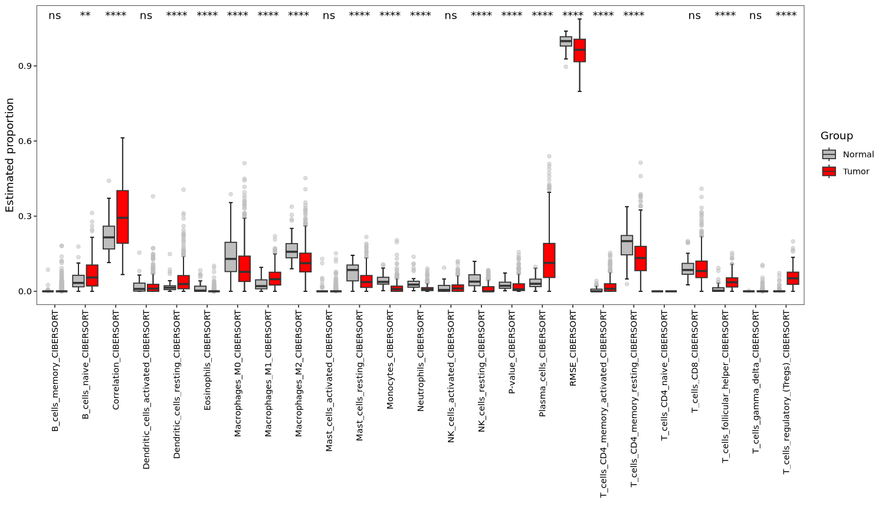
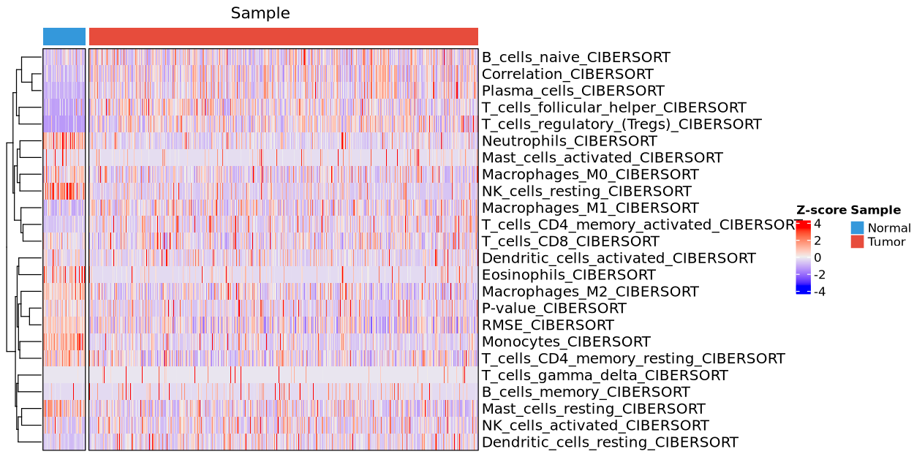
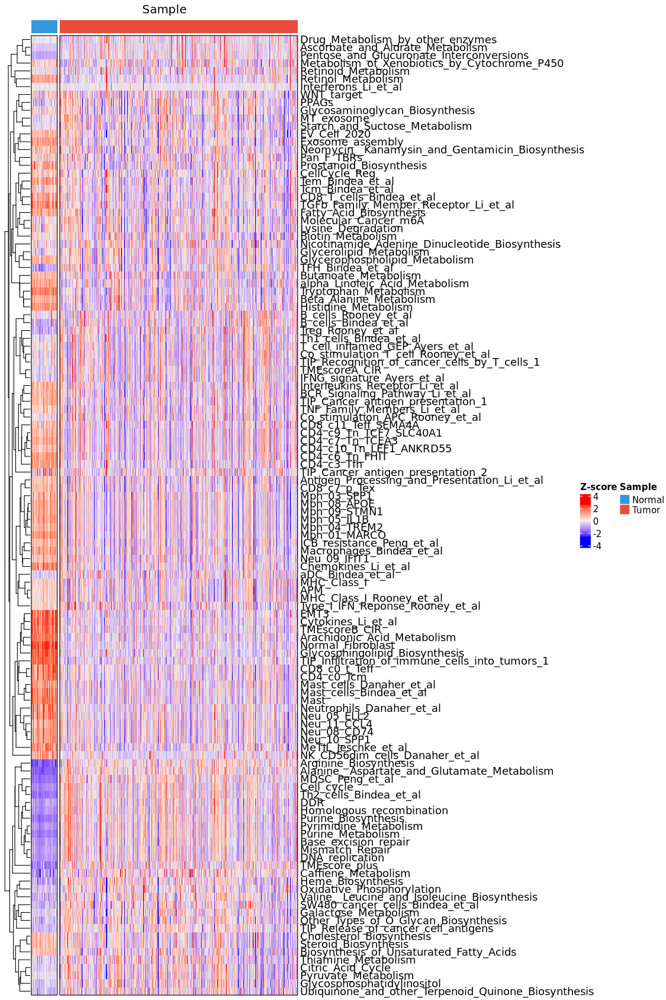

obj <- run_TME_analysis(obj,
method = "deconvo",
deconvo_method = "cibersort")
# ==========================================================================
# IOBR v0.99.99 Immuno-Oncology Biological Research
# For Tutorial: https://iobr.github.io/book/
# For Help: https://github.com/IOBR/IOBR/issues
#
# If you use IOBR in published research, please cite:
# DQ Zeng, YR Fang, ..., GC Yu*, WJ Liao*,
# Enhancing immuno-oncology investigations through multidimensional decoding
# of tumor microenvironment with IOBR 2.0. Cell Rep Methods 4, 100910 (2024).
# &
# YR Fang, ..., WJ Liao*, DQ Zeng*,
# Systematic Investigation of Tumor Microenvironment and
# Antitumor Immunity With IOBR, Med Research (2025).
# https://onlinelibrary.wiley.com/doi/epdf/10.1002/mdr2.70001
# ==========================================================================
#
# >>> Running CIBERSORT
obj <- run_TME_analysis(obj,
method = "signature",
signature_method = "pca")
# >>> Calculating signature score using PCA method
# >>> log2 transformation was finished
# There were 50 or more warnings (use warnings() to see the first 50)6 Tumor microenvironment analysis
6.1 Introduction
omicScope integrates the IOBR package to facilitate comprehensive tumor microenvironment (TME) analysis. The run_TME_analysis function enables one-click TME characterization, storing all results in the tmeData slot. Users have the flexibility to select their preferred analytical strategy: either signature-based scoring using curated gene sets to evaluate TME characteristics, or deconvolution algorithms to estimate the abundance and composition of immune cell types within the tumor.
6.2 TME analysis
Use the method parameter to choose between two analytical strategies: "signature" for signature-based scoring or "deconvo" for deconvolution analysis. Then specify the exact algorithm using either deconvo_method (for deconvolution) or signature_method (for signature analysis). Before proceeding, you need to install the IOBR package from its official website:
Check the results:
str(obj@tmeData)
# Formal class 'SimpleList' [package "S4Vectors"] with 4 slots
# ..@ listData :List of 2
# .. ..$ deconvoRes : tibble [600 × 26] (S3: tbl_df/tbl/data.frame)
# .. .. ..$ ID : chr [1:600] "TCGA-44-6147-01B-06R-A277-07" "TCGA-44-6147-01A-11R-1755-07" "TCGA-44-7661-01A-11R-2066-07" "TCGA-05-4396-01A-21R-1858-07" ...
# .. .. ..$ B_cells_naive_CIBERSORT : num [1:600] 0.099 0.1708 0.0512 0.0333 0.0206 ...
# .. .. ..$ B_cells_memory_CIBERSORT : num [1:600] 0.0817 0 0 0 0 ...
# .. .. ..$ Plasma_cells_CIBERSORT : num [1:600] 0.12177 0.22735 0.00504 0.08953 0.07076 ...
# .. .. ..$ T_cells_CD8_CIBERSORT : num [1:600] 0.0166 0.0788 0.0678 0.0947 0.1116 ...
# .. .. ..$ T_cells_CD4_naive_CIBERSORT : num [1:600] 0 0 0 0 0 0 0 0 0 0 ...
# .. .. ..$ T_cells_CD4_memory_resting_CIBERSORT : num [1:600] 0.363 0.132 0.138 0.176 0.102 ...
# .. .. ..$ T_cells_CD4_memory_activated_CIBERSORT: num [1:600] 0.03211 0.02895 0.12342 0.00512 0.02324 ...
# .. .. ..$ T_cells_follicular_helper_CIBERSORT : num [1:600] 0 0 0.0208 0.0593 0.0591 ...
# .. .. ..$ T_cells_regulatory_(Tregs)_CIBERSORT : num [1:600] 0 0.0255 0.0572 0.0833 0.0218 ...
# .. .. ..$ T_cells_gamma_delta_CIBERSORT : num [1:600] 0 0 0 0 0 0 0 0 0 0 ...
# .. .. ..$ NK_cells_resting_CIBERSORT : num [1:600] 0 0.0271 0 0.0225 0.0189 ...
# .. .. ..$ NK_cells_activated_CIBERSORT : num [1:600] 0.00647 0 0.01206 0 0.01423 ...
# .. .. ..$ Monocytes_CIBERSORT : num [1:600] 0.00051 0 0.05242 0.00818 0.01099 ...
# .. .. ..$ Macrophages_M0_CIBERSORT : num [1:600] 0 0.1267 0.0166 0.115 0.1048 ...
# .. .. ..$ Macrophages_M1_CIBERSORT : num [1:600] 0.0283 0.042 0.0682 0.0646 0.0865 ...
# .. .. ..$ Macrophages_M2_CIBERSORT : num [1:600] 0.108 0.079 0.154 0.177 0.254 ...
# .. .. ..$ Dendritic_cells_resting_CIBERSORT : num [1:600] 0 0 0.0628 0.0254 0.0288 ...
# .. .. ..$ Dendritic_cells_activated_CIBERSORT : num [1:600] 0.06385 0.00959 0.09873 0.00743 0 ...
# .. .. ..$ Mast_cells_resting_CIBERSORT : num [1:600] 0.0374 0.0508 0.0573 0.0143 0.0268 ...
# .. .. ..$ Mast_cells_activated_CIBERSORT : num [1:600] 0 0 0 0.00257 0 ...
# .. .. ..$ Eosinophils_CIBERSORT : num [1:600] 0.032467 0 0.000917 0 0.014565 ...
# .. .. ..$ Neutrophils_CIBERSORT : num [1:600] 0.00945 0.00137 0.01276 0.02122 0.03073 ...
# .. .. ..$ P-value_CIBERSORT : num [1:600] 0.003 0.002 0.013 0.033 0.048 ...
# .. .. ..$ Correlation_CIBERSORT : num [1:600] 0.393 0.486 0.255 0.186 0.149 ...
# .. .. ..$ RMSE_CIBERSORT : num [1:600] 0.921 0.873 0.975 1.01 1.022 ...
# .. ..$ signatureRes: tibble [600 × 312] (S3: tbl_df/tbl/data.frame)
# .. .. ..$ ID : chr [1:600] "TCGA-44-6147-01B-06R-A277-07" "TCGA-44-6147-01A-11R-1755-07" "TCGA-44-7661-01A-11R-2066-07" "TCGA-05-4396-01A-21R-1858-07" ...
# .. .. ..$ CD_8_T_effector : num [1:600] 0.123 -0.688 1.775 -1.586 2.836 ...
# .. .. ..$ DDR : num [1:600] 2.482 -0.432 10.376 2.417 -2.956 ...
# .. .. ..$ APM : num [1:600] -3.942 0.219 2.672 1.062 2.835 ...
# .. .. ..$ Immune_Checkpoint : num [1:600] 1.031 0.619 3.723 -2.192 2.547 ...
# .. .. ..$ CellCycle_Reg : num [1:600] 4.9797 -0.0903 1.0643 2.2662 -1.8748 ...
# .. .. ..$ Pan_F_TBRs : num [1:600] -1.354 2.299 4.014 -0.713 2.682 ...
# .. .. ..$ EMT1 : num [1:600] -4.944 0.568 -2.085 1.285 -0.507 ...
# .. .. ..$ EMT2 : num [1:600] -1.049 0.636 3.633 -1.162 2.579 ...
# .. .. ..$ EMT3 : num [1:600] 3.224 0.664 2.018 1.005 -1.301 ...
# .. .. ..$ WNT_target : num [1:600] 0.485 0.253 1.934 0.541 -0.203 ...
# .. .. ..$ FGFR3_related : num [1:600] -1.359 1.214 1.87 -0.41 -0.217 ...
# .. .. ..$ Cell_cycle : num [1:600] -4.62 -2.38 9.46 1.03 2.73 ...
# .. .. ..$ Mismatch_Repair : num [1:600] -4.6338 -0.7052 4.6153 0.7524 0.0886 ...
# .. .. ..$ Homologous_recombination : num [1:600] -0.416 -0.786 5.158 -0.994 0.869 ...
# .. .. ..$ Nucleotide_excision_repair : num [1:600] -5.429 -0.628 5.428 1.23 0.488 ...
# .. .. ..$ DNA_replication : num [1:600] -6.751 -1.466 6.203 -0.328 1.789 ...
# .. .. ..$ Base_excision_repair : num [1:600] -8.43 -0.45 4.212 -0.488 0.774 ...
# .. .. ..$ TMEscoreA_CIR : num [1:600] -0.264 -0.885 7.293 -3.855 4.498 ...
# .. .. ..$ TMEscoreB_CIR : num [1:600] 12.36 8.96 8.02 -2.46 -2.53 ...
# .. .. ..$ CD8_Rooney_et_al : num [1:600] -1.108 -0.568 1.032 -2.207 1.822 ...
# .. .. ..$ B_cells_Rooney_et_al : num [1:600] 6.169 4.564 0.609 -2.129 -1.05 ...
# .. .. ..$ Treg_Rooney_et_al : num [1:600] -0.291 0.378 2.764 -0.714 0.439 ...
# .. .. ..$ Macrophages_Rooney_et_al : num [1:600] -1.941 -0.959 0.823 -1.71 1.651 ...
# .. .. ..$ Neutrophils_Rooney_et_al : num [1:600] 1.011 0.6 2.635 -0.428 -0.448 ...
# .. .. ..$ pDCs_Rooney_et_al : num [1:600] -1.629 0.865 5.736 -1.557 0.786 ...
# .. .. ..$ MHC_Class_I_Rooney_et_al : num [1:600] -3.3054 -0.0326 1.7711 1.0391 2.6542 ...
# .. .. ..$ Co_stimulation_APC_Rooney_et_al : num [1:600] 2.036 0.502 2.503 -1.299 2.316 ...
# .. .. ..$ Co_stimulation_T_cell_Rooney_et_al : num [1:600] 2.805 0.877 3.632 -1.309 0.11 ...
# .. .. ..$ Co_inhibition_APC_Rooney_et_al : num [1:600] -0.000842 -0.946441 2.964509 -1.559692 2.018563 ...
# .. .. ..$ Co_inhibition_T_cell_Rooney_et_al : num [1:600] 3.43 0.31 3.44 -2.34 1.68 ...
# .. .. ..$ Type_I_IFN_Reponse_Rooney_et_al : num [1:600] 0.684 2.265 3.26 -1.011 1.516 ...
# .. .. ..$ Type_II_IFN_Reponse_Rooney_et_al : num [1:600] 0.807 0.924 2.485 -0.539 -1.23 ...
# .. .. ..$ MHC_Class_I : num [1:600] -4.243 0.272 3.069 1.01 2.815 ...
# .. .. ..$ MHC_Class_II : num [1:600] -2.874 0.439 2.309 -1.171 2.261 ...
# .. .. ..$ T_cell_inflamed_GEP_Ayers_et_al : num [1:600] -0.607 0.863 2.99 -2.768 2.37 ...
# .. .. ..$ IFNG_signature_Ayers_et_al : num [1:600] 1.498 -0.218 2 -0.82 2.533 ...
# .. .. ..$ MDSC_Wang_et_al : num [1:600] -0.2 0.831 6.026 -4.219 2.782 ...
# .. .. ..$ GPAGs : num [1:600] 0.888 1.241 3.668 -0.808 -0.607 ...
# .. .. ..$ PPAGs : num [1:600] -2.034 1.09 6.784 0.794 1.342 ...
# .. .. ..$ HLA_signature_gene : num [1:600] 8.87 6.67 13.22 -12.7 4.15 ...
# .. .. ..$ PPARgama_target_genes : num [1:600] 0.909 -0.113 1.065 3.033 -0.849 ...
# .. .. ..$ B_cells_Danaher_et_al : num [1:600] 3.6503 4.2358 0.0501 -2.3161 -0.415 ...
# .. .. ..$ Cytotoxic_cells_Danaher_et_al : num [1:600] -1.942 -1.063 0.676 -2.331 1.239 ...
# .. .. ..$ DC_Danaher_et_al : num [1:600] -1.208 -0.432 3.057 -1.287 3.067 ...
# .. .. ..$ Exhausted_CD8_Danaher_et_al : num [1:600] 0.117 -0.383 1.32 -1.712 1.414 ...
# .. .. ..$ Macrophages_Danaher_et_al : num [1:600] 1.122 -0.321 1.983 -1.764 1.854 ...
# .. .. ..$ Mast_cells_Danaher_et_al : num [1:600] 1.215 1.811 0.838 -1.362 -1.911 ...
# .. .. ..$ Neutrophils_Danaher_et_al : num [1:600] -0.316 0.391 1.247 -1.944 0.574 ...
# .. .. ..$ NK_CD56dim_cells_Danaher_et_al : num [1:600] -0.9082 -0.498 -0.2173 -0.1352 0.0911 ...
# .. .. ..$ NK_cells_Danaher_et_al : num [1:600] -1.421 -0.755 0.318 -1.2 1.274 ...
# .. .. ..$ T_cells_Danaher_et_al : num [1:600] 2.044 1.08 1.959 -1.498 0.545 ...
# .. .. ..$ TIP_Release_of_cancer_cell_antigens : num [1:600] -8.341 0.148 2.668 1.781 0.76 ...
# .. .. ..$ TIP_Cancer_antigen_presentation_1 : num [1:600] 3.852 -0.416 3.284 -1.918 0.969 ...
# .. .. ..$ TIP_Cancer_antigen_presentation_2 : num [1:600] 1.3181 -0.5345 0.0936 -0.5675 -0.2321 ...
# .. .. ..$ TIP_Priming_and_activation_1 : num [1:600] 3.81 1.86 6.21 -3.82 2.57 ...
# .. .. ..$ TIP_Priming_and_activation_2 : num [1:600] 2.04 1.01 4.23 -2.5 1.89 ...
# .. .. ..$ TIP_Trafficking_of_immune_cells_to_tumors : num [1:600] -0.358 1.631 4.721 -3.331 2.953 ...
# .. .. ..$ TIP_Infiltration_of_immune_cells_into_tumors_1 : num [1:600] -0.0437 0.963 -0.6779 -0.5759 -0.2505 ...
# .. .. ..$ TIP_Infiltration_of_immune_cells_into_tumors_2 : num [1:600] -1.308 -0.548 1.67 -0.357 -0.167 ...
# .. .. ..$ TIP_Recognition_of_cancer_cells_by_T_cells_1 : num [1:600] 2.524 0.949 5.37 -1.598 3.069 ...
# .. .. ..$ TIP_Recognition_of_cancer_cells_by_T_cells_2 : num [1:600] 3.394 0.625 3.38 -1.598 1.546 ...
# .. .. ..$ TIP_Killing_of_cancer_cells_1 : num [1:600] 0.103 -0.94 1.561 -1.144 1.34 ...
# .. .. ..$ TIP_Killing_of_cancer_cells_2 : num [1:600] -0.336 1.176 2.645 -2.732 2.793 ...
# .. .. ..$ TLS_Nature : num [1:600] 2.85 1.84 2.52 -2.18 -1.6 ...
# .. .. ..$ TMEscoreA_plus : num [1:600] -0.783 -1.412 3.924 -2.298 3.51 ...
# .. .. ..$ TMEscoreB_plus : num [1:600] 3.13 3.03 3.98 -1.54 -1.29 ...
# .. .. ..$ B_cells_Bindea_et_al : num [1:600] 4.008 5.212 -0.699 -2.735 -0.45 ...
# .. .. ..$ T_cells_Bindea_et_al : num [1:600] 3.899 1.477 3.308 -2.232 0.332 ...
# .. .. ..$ T_helper_cells_Bindea_et_al : num [1:600] 3.038 0.334 3.402 2.985 -2.312 ...
# .. .. ..$ Tcm_Bindea_et_al : num [1:600] 12.88 3.09 2.92 2.28 -4.83 ...
# .. .. ..$ Tem_Bindea_et_al : num [1:600] 2.1243 0.8415 2.816 -0.0614 -1.5163 ...
# .. .. ..$ Th1_cells_Bindea_et_al : num [1:600] 2.42 0.18 4.66 -2.26 2 ...
# .. .. ..$ Th2_cells_Bindea_et_al : num [1:600] -0.707 -1.509 3.473 -0.233 1.319 ...
# .. .. ..$ TFH_Bindea_et_al : num [1:600] 1.11 2.47 1.15 1.36 -3.09 ...
# .. .. ..$ Th17_cells_Bindea_et_al : num [1:600] -1.5419 0.1849 -0.0592 1.1036 -1.9045 ...
# .. .. ..$ CD8_T_cells_Bindea_et_al : num [1:600] 4.963 1.885 2.288 0.442 -1.62 ...
# .. .. ..$ Tgd_Bindea_et_al : num [1:600] 2.8243 -0.0955 0.1329 -0.4503 -0.327 ...
# .. .. ..$ Cytotoxic_cells_Bindea_et_al : num [1:600] -0.559 -0.291 0.754 -2.63 0.587 ...
# .. .. ..$ NK_cells_Bindea_et_al : num [1:600] -1.044 2.327 2.476 -0.394 -1.232 ...
# .. .. ..$ NK_CD56dim_cells_Bindea_et_al : num [1:600] -1.221 -0.902 0.372 -0.406 0.836 ...
# .. .. ..$ DC_Bindea_et_al : num [1:600] -2.076 0.192 4.468 -1.535 1.697 ...
# .. .. ..$ iDC_Bindea_et_al : num [1:600] -2.909 -0.266 3.38 -2.546 0.688 ...
# .. .. ..$ aDC_Bindea_et_al : num [1:600] -1.839 0.408 1.592 -0.107 1.584 ...
# .. .. ..$ Eosinophils_Bindea_et_al : num [1:600] 4.224 2.183 2.505 -0.203 -3.138 ...
# .. .. ..$ Macrophages_Bindea_et_al : num [1:600] 0.343 -0.223 3.779 -3.36 3.431 ...
# .. .. ..$ Mast_cells_Bindea_et_al : num [1:600] 2.24 3.05 1.89 -1.65 -2.97 ...
# .. .. ..$ Neutrophils_Bindea_et_al : num [1:600] 1.343 2.033 3.831 -2.884 0.491 ...
# .. .. ..$ SW480_cancer_cells_Bindea_et_al : num [1:600] -7.919 0.753 3.743 -0.803 2.096 ...
# .. .. ..$ Normal_mucosa_Bindea_et_al : num [1:600] 3.088 4.14 3.96 -0.244 1.043 ...
# .. .. ..$ Antigen_Processing_and_Presentation_Li_et_al : num [1:600] -7.73 0.55 6.48 -1.66 3.72 ...
# .. .. ..$ Antimicrobials_Li_et_al : num [1:600] 3.24 2.28 13.11 -5.94 2.68 ...
# .. .. ..$ BCR_Signaling_Pathway_Li_et_al : num [1:600] 5.178 3.933 5.504 -0.601 -0.67 ...
# .. .. ..$ Chemokines_Li_et_al : num [1:600] -1.032 0.653 7.175 -3.592 3.14 ...
# .. .. ..$ Chemokine_Receptors_Li_et_al : num [1:600] 2.64283 2.15404 5.87339 -2.14288 -0.00636 ...
# .. .. ..$ Cytokines_Li_et_al : num [1:600] 6.4835 3.864 8.2362 -2.4767 -0.0478 ...
# .. .. ..$ Cytokine_Receptors_Li_et_al : num [1:600] 6.5 6.17 9.29 -1.19 -3.56 ...
# .. .. ..$ Interferons_Li_et_al : num [1:600] 3.5293 -0.5651 0.0918 0.0784 -0.6349 ...
# .. .. ..$ Interferon_Receptor_Li_et_al : num [1:600] 1.882 1.034 0.513 -1.277 -0.536 ...
# .. .. .. [list output truncated]
# ..@ elementType : chr "ANY"
# ..@ elementMetadata: NULL
# ..@ metadata : list()6.3 Visualization
We’ve included the tme_plot function to generate visualizations of your TME analysis.
6.3.1 Boxplot
tme_plot(obj,
method = "deconvo",
type = "box")
6.3.2 Heatmap plot
tme_plot(obj,
method = "deconvo",
type = "heatmap")
6.3.3 Signature results plot
tme_plot(obj,
method = "signature",
type = "heatmap")